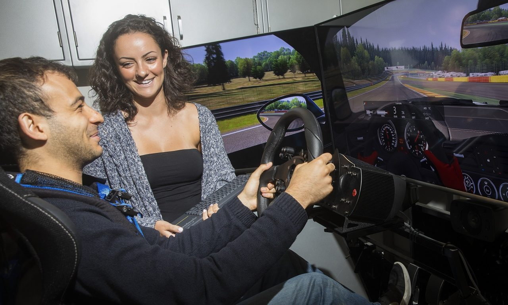

Problem:
Traditional fixed-base driving simulators used in driver rehabilitation often lack motion feedback, which limits the realism of the driving experience and underutilizes the patient’s vestibular and somatosensory systems. This restricts their effectiveness in retraining individuals such as older adults or those recovering from stroke or traumatic brain injury who have lost the ability to drive safely and independently. Without motion cues, these simulators place greater cognitive demand on users, reducing their ability to perform complex driving tasks.
